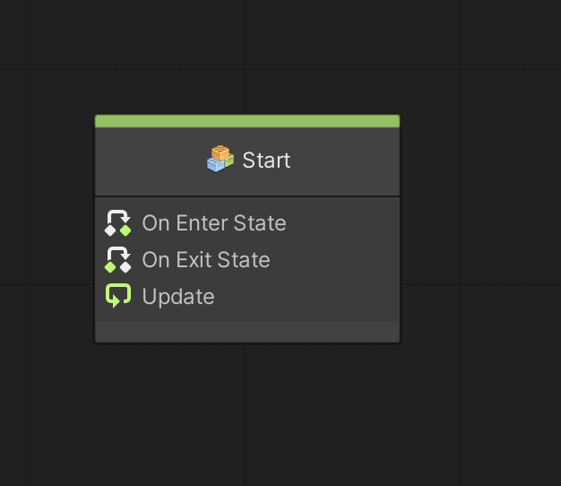
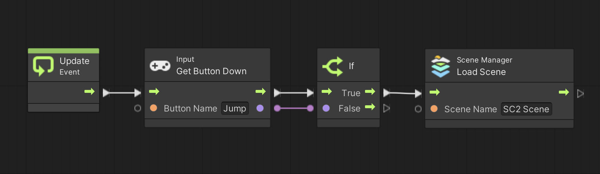
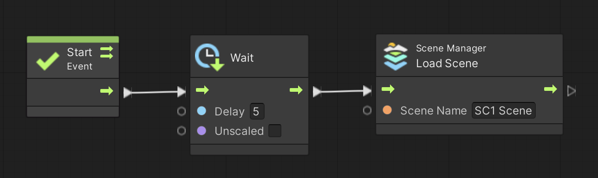
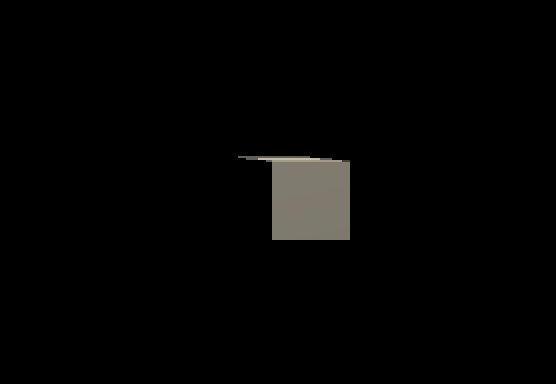
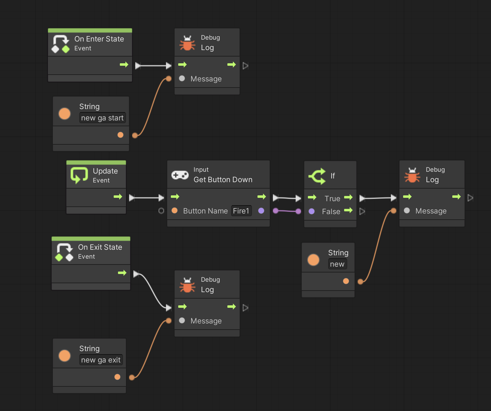
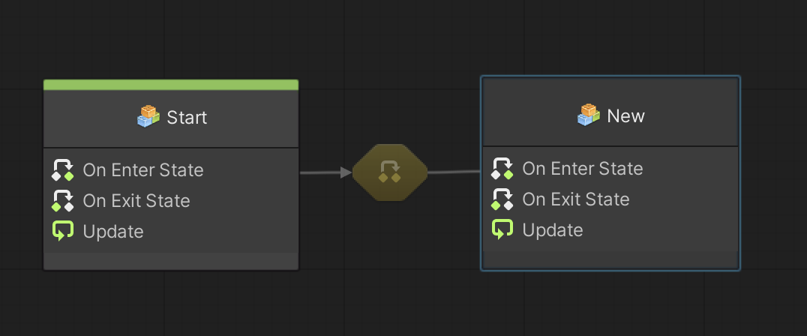
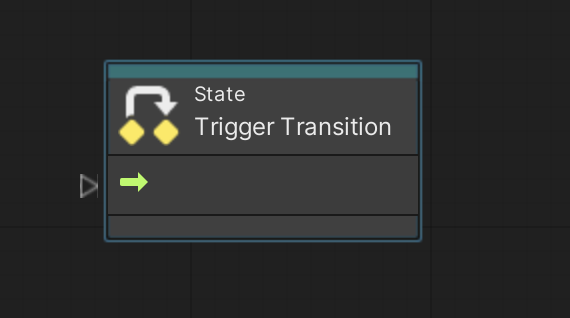
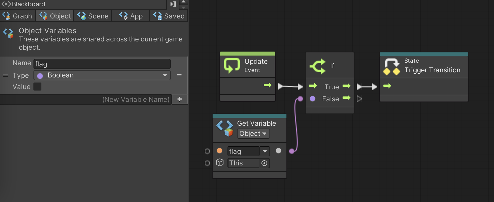
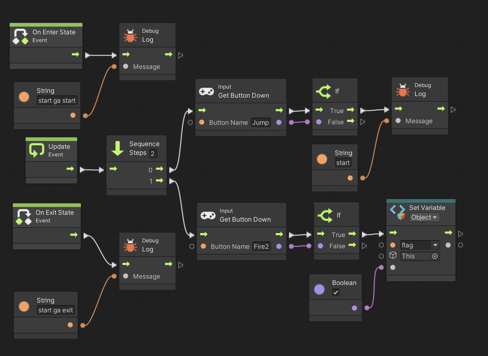

ゲームの中では色々な状態(State)が現れます。
例えば主人公なら通常状態・無敵状態・毒状態など様々な状態がありますね。
ステージにも晴天・雨天・荒天など様々な状態がありますし、開始直後・タイムアップ直前など時間経過も状態のひとつです。
Visual Scripting では「State Machine」というコンポーネントを使って状態と状態の切り替え(状態遷移と言います)をおこなったり、現在の状態に応じてゲームオブジェクトの動きを変更したりすることが可能です。
今まで使ってきた Script Machine コンポーネントでは Script Graph というファイルを使っていましたが、State Machine では「State Graph」という種類のファイルを作成します。
この State Graph に保存されているスクリプトは State Machine コンポーネントによって実行されます。
では以下の手順に従って早速 State Machine を準備しましょう。
ごちゃごちゃしてきたのでシーンも新規作成することにします。
アセットフォルダの Scenes フォルダの中にシーンを新規作成し、シーン名を「State Scene」にする。背景色は任意で構わない
新規作成したシーンへ移動する
ヒエラルキー右クリック → Create Empty で GameObject というゲームオブジェクトを新規作成し、名前を「PROGRAM」にする (Position は適当で良いです)
Scripts フォルダの中に入り、空いている部分を右クリックしてメニューを表示し、Create → Visual Scripting → State Graph を選ぶ ※ Script Graph じゃないので注意
Scripts フォルダ内に「New State Graph」というアセットが出来るので「State State」に名前を変更する
ヒエラルキーの PROGRAM をクリックしてインスペクタを表示する
インスペクタの下の方に Add Component というボタンがあるのでそれを押す
Visual Scripting → State Machine を選択してアタッチする ※ Script Machine じゃないので注意
State Machine の Graph の None と書いてあるセルに Scripts フォルダの State State をドロップする
None の表示が State State に変わっているのを確認する
では状態を新規作成してみましょう。
Scripts フォルダ内にある State State を開く
右クリックして Create Script State を選択すると Start という状態が出来る(図1)
図1. Start 状態

この Start 状態をダブルクリックすると Start 状態の中が表示され、図2 の様な 3 つの基本的なイベントユニットが表示される
図2. 状態の基本的なイベントユニット
それぞれのイベントユニットは
On Enter State → 他の状態から現在の状態に移った直後に一度だけ実施されるイベント (Script Graph の Start イベントに相当)
Update → 現在の状態にいる間、描画フレーム毎に繰り返し実施されるイベント (Script Graph の Update イベントに相当)
On Exit State → 現在の状態から違う状態に移る直前に一度だけ実施されるイベント
という内容になっています。
では試しに図 3 の様なスクリプトを作成して実行して下さい。
実行ボタンを押すとすぐに Start 状態の中に入り、On Enter State イベントが実行されて「start ga start」と表示されます。
その後 Update イベントが繰り返し実行されるので、ジャンプボタンを押すと「start」と表示されます。
最後に実行停止すると Start 状態の中から抜け出し、On Exit State イベントが実行されて「start ga exit」と表示されます。
図3. Start 状態のスクリプト
次に別の状態を追加して状態遷移を行なってみたいと思います。
グラフインスペクタの上にある Start タブの隣に表示されている PROGRAM タブをクリックして Start 状態から抜け出す
最初の画面(上の図 1 )に戻ったら、右クリックして Create Script State を選択すると「Script State」という状態が出来るので、グラフインスペクタの (Title) と書いてある欄に New と入れて名前を変更する(図4)
図4. New 状態の作成
この New 状態をダブルクリックすると New 状態の中(上の図 2)が表示される
では New 状態の中で図 5 の様なスクリプトを作成して下さい。
このスクリプトは New 状態の中に入ったら On Enter State イベントで「new ga start」と表示され、
Update イベントの中で Fire1 ボタンを押すと「new」と表示され、
New 状態の中から抜け出すときに On Exit State イベントが実行されて「new ga exit」と表示されるスクリプトです。
図5. New 状態のスクリプト
ところが実行開始してもこのままではずっと Start 状態の中にいて New 状態には移らないので Fire1 を押しても何も表示されません。
そこで Start 状態から New 状態の方向に以下の手順で遷移(Transition)を作ります。
グラフインスペクタの上にある New タブの隣に表示されている PROGRAM タブをクリックして New 状態から抜け出す
最初の画面に戻ったら、Start 状態を右クリックして Make Transition を選択する
矢印が表示されるので New 状態に接続すると遷移が表示される(図6)
図6. Start 状態と New 状態の間に遷移が出来る
この遷移をダブルクリックすると遷移の中が表示される(図7)
図7. 遷移の中

遷移の中には State Trigger Transition ユニットがひとつあるだけです。
このユニットを実行することで Start 状態から New 状態に状態が移ります。
さて何か適当なフラグを用意し、そのフラグが立ったら状態を変えるというのが典型的な状態遷移のやり方だと思うので、Boolean 型の Object 変数をひとつ用意し、その変数が False から True になったら状態を変えることにします。
例えば図 8 の様なObject 変数とスクリプトを作って下さい。
flag という変数を Update イベントの中で監視し、flag が True に値が変化したら New 状態に移行します。
図8. 遷移のスクリプトの例

またフラグを立てる(flag を True にする)ために、 Start 状態の中に戻って Update イベントを図 9 の様に変更して下さい。
すると Fire2 ボタンを押すと flag が True に変わります。
図9. Start 状態の中でフラグを立てる
それでは実行ボタンを押して実行して下さい。
実行ボタンを押すとすぐに Start 状態の中に入り、On Enter State イベントが実行されて「start ga start」と表示されます。
その後 Update イベントが繰り返し実行されるので、ジャンプボタンを押すと「start」と表示されます。
次に Fire2 ボタンを押すとフラグが立って Start 状態の中から抜け出しますが、その際に Start 状態の On Exit State イベントが実行されて「start ga exit」と表示されます。
これで状態が New 状態に移ったので、New 状態の On Enter State イベントが実行されて「new ga start」と表示されます。
その後 Update イベントが繰り返し実行されるので、Fire1 ボタンを押すと「new」と表示されます。
最後に実行停止すると New 状態の中から抜け出し、On Exit State イベントが実行されて「new ga exit」と表示されます。
今回は 2 つしか状態を作りませんでしたが、自分でも色々と状態を増やして状態遷移の練習をして下さい。